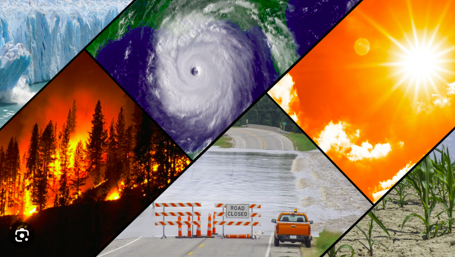

Connecting for a greener tomorrow
Sarah Mitchell: Sarah is a passionate environmentalist and computer science student at a leading university. She specializes in IoT (Internet of Things) technology and has a deep interest in using it to address climate-related challenges.
John Anderson: John is an electrical engineering student with a knack for creating innovative hardware solutions. He is dedicated to developing IoT devices and sensors that can contribute to a more sustainable planet.
Lisa Patel: Lisa is a business and marketing enthusiast. She has a keen understanding of the market and a strong belief in the potential for technology to drive positive change. Her skills in business strategy and marketing are crucial to the company's success.
Mission:
IoT4Climate was founded with the mission to harness the power of IoT technology to combat climate change and create a more sustainable future. The company is driven by the following core objectives: Environmental Impact: IoT4Climate is committed to developing and implementing IoT solutions that directly address climate-related challenges. From smart energy management systems to precision agriculture tools and air quality monitoring, the company strives to make a positive impact on the environment. Innovation: The founders believe in the potential of technology to revolutionize the way we approach environmental problems. They are dedicated to pushing the boundaries of IoT technology to create new, innovative, and effective solutions. Education and Awareness: IoT4Climate not only wants to create solutions but also educate and raise awareness about climate issues and the role technology can play in addressing them. The company aims to empower individuals and businesses with knowledge and tools to make more sustainable choices. Collaboration: The founders recognize that addressing climate change is a global challenge that requires collaboration. IoT4Climate seeks partnerships with like-minded organizations, researchers, and individuals to work together on solutions that have a lasting impact. IoT4Climate is driven by a shared vision of a world where technology and climate action go hand in hand, and where IoT innovations make a substantial contribution to mitigating the effects of climate change.
Climate Change refers to long-term alterations in Earth's average weather patterns, particularly changes in temperature and weather events. It is primarily driven by human activities, such as the burning of fossil fuels (coal, oil, and natural gas), deforestation, and industrial processes, which release greenhouse gases into the atmosphere. These gases, including carbon dioxide (CO2), methane (CH4), and nitrous oxide (N2O), trap heat and lead to a phenomenon known as the greenhouse effect. This effect causes the Earth's temperature to rise, resulting in various consequences:
1. Rising Temperatures: One of the most evident consequences of climate change is an increase in global temperatures. This leads to more frequent and severe heatwaves, affecting agriculture, water resources, and public health.
2. Melting Ice and Rising Sea Levels: Higher temperatures cause polar ice caps and glaciers to melt, resulting in rising sea levels. This threatens coastal communities and ecosystems, leading to increased coastal erosion and flooding.
3. Extreme Weather Events: Climate change is linked to more frequent and intense weather events, including hurricanes, droughts, floods, and wildfires. These events can cause significant damage to infrastructure, agriculture, and human settlements.
4. Ocean Acidification: Increased CO2 levels in the atmosphere also contribute to higher CO2 absorption in the oceans, making them more acidic. This harms marine life, particularly organisms with calcium carbonate shells or skeletons.
5. Disruption of Ecosystems: Climate change can alter ecosystems, leading to shifts in the distribution of plant and animal species. It can cause species extinction and disrupt food chains.
6. Water Scarcity: Changes in precipitation patterns can lead to water scarcity in some regions, affecting agriculture, drinking water availability, and overall water security.
7. Health Impacts: Climate change can exacerbate health issues through heat-related illnesses, the spread of diseases carried by insects (e.g., malaria and dengue fever), and increased air pollution.
8. Food Security: Changes in temperature and precipitation patterns can negatively impact crop yields and food production. This can lead to food shortages and increased food prices.
9. Economic Consequences: Climate change has far-reaching economic impacts, affecting industries such as agriculture, insurance, and tourism. Extreme weather events and rising sea levels can cause significant financial losses.
10. Migration and Conflict: As climate change worsens living conditions in some regions, it can lead to population displacement and even conflict as communities compete for dwindling resources.
It's important to note that the consequences of climate change are already being observed and are projected to intensify in the coming years if significant actions are not taken to mitigate and adapt to these changes. Addressing climate change is a global challenge that requires international cooperation and concerted efforts to reduce greenhouse gas emissions and build resilience against its effects.
1. Smart Energy Management Systems: IoT4Climate develops smart energy management systems that help businesses and homeowners optimize their energy consumption. These systems use IoT sensors to monitor energy usage in real-time, identify energy wastage, and automatically control devices and appliances to reduce energy consumption. By minimizing energy waste, IoT4Climate helps reduce carbon emissions and lower energy bills, contributing to a more energy-efficient and environmentally friendly world. |
2. Precision Agriculture: IoT4Climate's precision agriculture solutions utilize IoT sensors to collect data on soil conditions, weather, and crop health. Farmers can access this data through a user-friendly platform, enabling them to make data-driven decisions about irrigation, fertilization, and pest control. By optimizing farming practices, IoT4Climate not only increases crop yields but also reduces the use of water, energy, and pesticides, thus promoting sustainable and eco-friendly agriculture. |
3. Air Quality Monitoring: IoT4Climate deploys networks of IoT air quality sensors in urban areas to continuously monitor air pollution levels. The data is made accessible to the public and local authorities in real-time. When air quality deteriorates, the system can trigger alerts and recommend actions, such as reducing traffic congestion or limiting industrial emissions. By providing accurate air quality information and enabling proactive measures, IoT4Climate contributes to improving air quality, public health, and reducing the environmental impact of air pollution. |